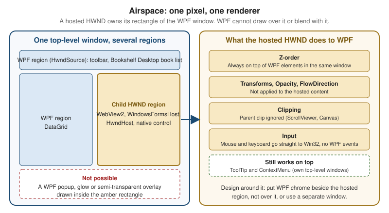

Interop: Win32, WinForms & Web Content
|
This content was generated with the assistance of AI and should be verified against the official documentation before being relied on in production. |
Real Windows applications are rarely pure. A WPF app may need an old ActiveX-era grid from a vendor, a Windows Forms
designer surface, a native video control, an embedded web page, or one Win32 call that the framework never wrapped.
WPF, Windows Forms and WinUI 3 are three different UI stacks, but they all sit on the same operating system
primitive: the window handle (HWND). Interop is the art of putting one stack’s HWND inside another’s, and of
reaching across to the operating system directly. This page covers the hosting classes, the one rule that constrains
all of them (airspace), the web-content options for Bookshelf Desktop, native calls, and what is and is not
available for hosting WinUI 3 controls inside WPF or Windows Forms.
The page was written against these versions, current in October 2026:
-
.NET 10 LTS, latest patch 10.0.13, with C# 14. .NET 11 is at release candidate 2 (general availability is expected 10 to 13 November 2026). The hosting classes in
System.Windows.InteropandSystem.Windows.Forms.Integrationare unchanged across .NET Framework 4.8 and .NET 8, 9 and 10. -
Windows App SDK 2.5.1 (stable) for the XAML Islands section.
-
Visual Studio 2026 18.11.1.
-
The Microsoft.Web.WebView2 NuGet package and the WebView2 Runtime for the web-content section. The package version is not pinned here; take the current stable one from NuGet.
Choosing an Interop Technique
| Need | Technique | Direction |
|---|---|---|
Host a native or custom Win32 window inside WPF |
|
Win32 inside WPF |
Host WPF content inside a native Win32 window |
|
WPF inside Win32 |
Observe or intercept window messages of a WPF window |
|
Win32 messages into WPF |
Reuse a Windows Forms control inside WPF |
|
WinForms inside WPF |
Reuse a WPF control inside a Windows Forms form |
|
WPF inside WinForms |
Show web content (HTML, JavaScript) |
WebView2 control for WPF or WinForms |
Chromium inside either |
Reuse Razor components as UI |
|
Blazor inside WPF or WinForms |
Call an operating system function |
P/Invoke, ideally generated by CsWin32 |
Managed to native |
Call a Windows Runtime or Windows App SDK API |
Windows-specific target framework moniker |
Managed to WinRT |
Show WinUI 3 controls inside a WPF or WinForms window |
WinUI XAML Islands ( |
WinUI inside either |
The techniques combine freely at one level: a WPF window can hold a WindowsFormsHost, an HwndHost and a WebView2
side by side. Nesting is the limit. Microsoft Learn states that multilevel hybrid controls (for example a Windows Forms
control that contains a WPF control that contains another Windows Forms control) are not supported, so treat one level
of nesting as the maximum.
How WPF Uses Window Handles
Understanding interop starts with an architectural fact from the WPF interop documentation: all WPF content on the
screen is ultimately backed by an HWND. When you create a WPF Window, WPF creates one top-level HWND and uses an
HwndSource to put the Window and all its WPF content inside it. The rest of the WPF elements share that one
handle. The exceptions are menus, combo box drop-downs and other pop-ups, each of which creates its own top-level
window, which is why a WPF menu can extend past the edge of the window that opened it.
This is the reverse of Windows Forms, where almost every control is its own HWND. It explains both why WPF
rendering is flexible (transforms, opacity and clipping happen inside one surface) and why embedding another
technology is restricted: the embedded child is a real child HWND that the Windows window manager composes, not
something WPF can draw.
The two main classes are:
-
HwndSourcewraps WPF content in anHWND. Set itsRootVisualto a WPF element, give it a parentHWND, and the content becomes a child window of any Win32 window. ItsHandleproperty is theHWND. WPF’s ownWindowuses it internally. -
HwndHostis aFrameworkElement(not aControl) that wraps anHWNDso it can be placed in a WPF element tree. You derive from it and overrideBuildWindowCore(create and return the child window),DestroyWindowCore(destroy it) and optionallyWndProc(handle its messages). WPF tells Win32 where to position the child relative to the WPF window.
Source: WPF and Win32 interop
Airspace
Interop has one rule that surprises everybody once. Within a top-level window each pixel belongs to exactly one
HWND, and therefore to exactly one rendering technology. Microsoft Learn calls the set of pixels an HWND owns its
region, and the informal name is airspace. Everything that renders above a pixel during the lifetime of the
application must be part of the same rendering technology. Rendering WPF pixels over a Win32 region is "disallowed
as much as possible through the interoperation APIs", and mixing transparency between technologies cannot be built
because a semi-transparent pixel would be owned by two renderers.

The practical consequences, all from the interop documentation:
| Aspect | Behaviour of a hosted HWND (HwndHost, WindowsFormsHost, WebView2 WPF control) |
|---|---|
Z-order |
Always drawn on top of other WPF elements in the same top-level window |
Transforms |
|
Opacity |
Only |
|
Setting them on the host has no effect; they are not mapped to Win32 |
Clipping |
The host ignores the clipping region of its parent, which matters inside a |
Pop-ups |
|
Mouse input |
While the pointer is over the host, WPF mouse events are not raised and |
Keyboard input |
While the host has focus, WPF keyboard events are not raised and |
Focus events |
|
Designing around airspace is a layout decision, not a code fix: put toolbars, overlays and busy indicators beside the
hosted region instead of over it; show modal dialogs and notifications as separate windows; and do not animate or fade
a host. Tab and mnemonic handling across the boundary is the job of IKeyboardInputSink and IKeyboardInputSite,
which HwndHost and HwndSource implement; override the appropriate methods when the default behaviour is not
enough, and note that inside the Win32 region the tabbing logic belongs entirely to the Win32 code.
Hosting a Win32 Window in WPF with HwndHost
The recipe from the documentation is: derive from HwndHost, create the child window in BuildWindowCore, destroy it
in DestroyWindowCore, then add an instance to the WPF tree. The following example hosts the system EDIT control
as a native notes box for Bookshelf Desktop, using the source-generated LibraryImport form of P/Invoke (see the
Native Interop page of the C# reference for the details of that attribute). The source generator emits unsafe code,
so the project needs <AllowUnsafeBlocks>true</AllowUnsafeBlocks>; without it the build fails with SYSLIB1062.
using System.Runtime.InteropServices;
using System.Windows.Interop;
namespace Bookshelf.Desktop.Interop;
/// <summary>Hosts a native single-line EDIT control inside a WPF element tree.</summary>
public sealed partial class NativeEditHost : HwndHost
{
private const int WS_CHILD = 0x40000000;
private const int WS_VISIBLE = 0x10000000;
private const int WS_BORDER = 0x00800000;
private nint _hwnd;
protected override HandleRef BuildWindowCore(HandleRef hwndParent)
{
_hwnd = CreateWindowEx(
0,
"EDIT",
string.Empty,
WS_CHILD | WS_VISIBLE | WS_BORDER,
0, 0, (int)Width, (int)Height,
hwndParent.Handle,
nint.Zero,
nint.Zero,
nint.Zero);
return new HandleRef(this, _hwnd);
}
protected override void DestroyWindowCore(HandleRef hwnd)
{
DestroyWindow(hwnd.Handle);
_hwnd = nint.Zero;
}
[LibraryImport("user32.dll", EntryPoint = "CreateWindowExW", StringMarshalling = StringMarshalling.Utf16)]
private static partial nint CreateWindowEx(
int exStyle, string className, string windowName, int style,
int x, int y, int width, int height,
nint parent, nint menu, nint instance, nint param);
[LibraryImport("user32.dll", SetLastError = true)]
[return: MarshalAs(UnmanagedType.Bool)]
private static partial bool DestroyWindow(nint hwnd);
}Source: HwndHost Class; for the attribute, Source generation for platform invokes
Using it from XAML needs only an element with an explicit size, because the host reports the size you give it:
<Window x:Class="Bookshelf.Desktop.MainWindow"
xmlns="http://schemas.microsoft.com/winfx/2006/xaml/presentation"
xmlns:x="http://schemas.microsoft.com/winfx/2006/xaml"
xmlns:interop="clr-namespace:Bookshelf.Desktop.Interop"
Title="Bookshelf Desktop" Height="320" Width="480">
<StackPanel Margin="12">
<TextBlock Text="Native notes (an HWND, so it ignores WPF styling)" Margin="0,0,0,6"/>
<interop:NativeEditHost Width="320" Height="24" HorizontalAlignment="Left"/>
</StackPanel>
</Window>Source: WPF and Win32 interop; the example is a minimal illustration of the documented BuildWindowCore and DestroyWindowCore pattern, not an official sample (the official walkthrough hosts a list box).
Messages from the hosted window reach you in two equivalent ways, per the documentation: override HwndHost.WndProc,
or handle the MessageHook event on the host. You cannot process messages from windows in another process with
WndProc. To send a message to the hosted window (for example WM_SETTEXT), P/Invoke SendMessage.
Hosting WPF in a Win32 Window with HwndSource
The reverse direction wraps a WPF element tree in a child window of a Win32 parent. The documentation steps are:
create an HwndSource with the parent HWND, create the WPF content, assign it to RootVisual, and use Handle in
the native code. Keep a reference to the HwndSource, or it can be garbage collected. In a managed Windows Forms or
Win32 interop shell this looks like:
using System.Windows;
using System.Windows.Controls;
using System.Windows.Interop;
namespace Bookshelf.Desktop.Interop;
public static class WpfIsland
{
private static HwndSource? s_source; // keeps the source alive
public static nint Attach(nint parentHwnd, int width, int height)
{
var parameters = new HwndSourceParameters("BookshelfIsland")
{
ParentWindow = parentHwnd,
WindowStyle = 0x40000000 | 0x10000000, // WS_CHILD | WS_VISIBLE
Width = width,
Height = height
};
s_source = new HwndSource(parameters)
{
RootVisual = new TextBlock { Text = "WPF content in a Win32 window" }
};
return s_source.Handle;
}
}The same class lets a normal WPF window listen to raw messages. HwndSource.FromHwnd(handle)?.AddHook(WndProc) registers
a hook that sees every message sent to the window procedure, which is the usual way to handle WM_DEVICECHANGE,
WM_HOTKEY or a custom WM_APP message. Obtain the handle from WindowInteropHelper after the window’s
SourceInitialized event.
WindowsFormsHost and ElementHost
The System.Windows.Forms.Integration namespace holds the two classes for mixing WPF and Windows Forms inside one
process: WindowsFormsHost (a WPF element that hosts a Windows Forms control through its Child property) and
ElementHost (a Windows Forms control that hosts a WPF element). They are the supported path when a Windows Forms
control has no WPF equivalent, or when you migrate a Windows Forms application to WPF one form at a time.
Supported scenarios according to the documentation: hosting one or more Windows Forms controls from XAML or code, container and composite controls, ActiveX controls, master/detail layouts with either technology as the master, and hybrid controls. Going the other way, you can host WPF controls and pages in a form, start a WPF window, and host custom WPF controls. Ambient properties (font, colours, enabled state) are translated by the host control; the mapping is documented in Windows Forms and WPF Property Mapping. All interop scenarios require full trust, and both frameworks keep their single-threaded model, so cross-thread calls throw.
| Behaviour | Detail |
|---|---|
Layout |
A hosted Windows Forms control sometimes has a fixed size (a |
Tabbing |
Tab order inside the host follows the Windows Forms |
Shortcut keys |
Windows Forms shortcut keys handled at the preprocessing stage always take priority over WPF key bindings. A |
Accelerators |
An accelerator duplicated across technologies always goes to the Windows Forms control |
Enter/Leave events |
Not raised when focus moves into or out of a |
Clipboard, drag-and-drop, accessibility |
Work as usual across both technologies |
The next example hosts a Windows Forms MaskedTextBox for an ISBN field in the Bookshelf Desktop edit form.
<Window x:Class="Bookshelf.Desktop.IsbnWindow"
xmlns="http://schemas.microsoft.com/winfx/2006/xaml/presentation"
xmlns:x="http://schemas.microsoft.com/winfx/2006/xaml"
xmlns:wf="clr-namespace:System.Windows.Forms;assembly=System.Windows.Forms"
Title="Edit book" Height="160" Width="360">
<StackPanel Margin="12">
<Label Content="ISBN-13" Target="{Binding ElementName=isbnHost}"/>
<WindowsFormsHost x:Name="isbnHost" Height="26">
<wf:MaskedTextBox x:Name="isbnBox" Mask="000-0-0000-0000-0"/>
</WindowsFormsHost>
</StackPanel>
</Window>A project that uses WindowsFormsHost must enable both stacks in its project file:
<Project Sdk="Microsoft.NET.Sdk">
<PropertyGroup>
<OutputType>WinExe</OutputType>
<TargetFramework>net10.0-windows</TargetFramework>
<UseWPF>true</UseWPF>
<UseWindowsForms>true</UseWindowsForms>
<Nullable>enable</Nullable>
<ImplicitUsings>enable</ImplicitUsings>
</PropertyGroup>
</Project>The opposite direction, a WPF control inside a form, is code only:
using System.Windows.Forms;
using System.Windows.Forms.Integration;
using Bookshelf.Desktop.Views;
namespace Bookshelf.Desktop.Legacy;
public sealed class BookDetailsForm : Form
{
public BookDetailsForm()
{
Text = "Book details";
var host = new ElementHost
{
Dock = DockStyle.Fill,
Child = new BookDetailsView() // a WPF UserControl bound to BookViewModel
};
Controls.Add(host);
}
}Source: WPF and Windows Forms interop. The examples apply the documented WindowsFormsHost and ElementHost scenarios; they are not official samples. BookDetailsView is a Bookshelf Desktop WPF view assumed for the scenario.
Pitfalls with the Forms Hosts
-
A Windows Forms shortcut (
ToolStrip,MenuStrip) silently overrides a WPFKeyBindingwith the same gesture. Avoid duplicate gestures across the two technologies. -
Do not place a
WindowsFormsHostinside aScrollViewerand expect it to scroll out of view cleanly; the host ignores the parent clip. -
Windows Forms controls that handle
KeyDownthemselves are processed last in a WPF host. OverrideIsInputKeyor handlePreviewKeyDownand setIsInputKeytotruewhen a control must see special keys. -
There is no partial-trust story: all interop requires full trust.
Web Content: WebView2 Instead of WebBrowser
For embedding web pages, the WPF WebBrowser control is the legacy answer: it wraps an old browser engine and is not
a good basis for new work. The supported replacement is WebView2, which embeds the Microsoft Edge (Chromium) engine
through the WebView2 Runtime. Microsoft Learn provides getting-started tutorials for WPF and for Windows Forms.
This is also the control to use when a Bookshelf Desktop screen needs rich content such as book descriptions with
formatted text, or an embedded online store page.
Both tutorials install the Microsoft.Web.WebView2 NuGet package. The WPF control lives in
Microsoft.Web.WebView2.Wpf and the Windows Forms control in Microsoft.Web.WebView2.WinForms; both expose a
WebView2 class with a Source property for the initial URI and a CoreWebView2 property for the underlying API.
The CoreWebView2 object is created asynchronously, so call await EnsureCoreWebView2Async(null) (the argument is
an optional CoreWebView2Environment) before touching it.
<Window x:Class="Bookshelf.Desktop.BookPreviewWindow"
xmlns="http://schemas.microsoft.com/winfx/2006/xaml/presentation"
xmlns:x="http://schemas.microsoft.com/winfx/2006/xaml"
xmlns:wv2="clr-namespace:Microsoft.Web.WebView2.Wpf;assembly=Microsoft.Web.WebView2.Wpf"
Title="Book preview" Height="450" Width="800">
<DockPanel>
<DockPanel DockPanel.Dock="Top" Margin="4">
<Button x:Name="ButtonGo" DockPanel.Dock="Right" Click="ButtonGo_Click" Content="Go"/>
<TextBox x:Name="addressBar"/>
</DockPanel>
<wv2:WebView2 x:Name="webView" Source="https://www.microsoft.com"/>
</DockPanel>
</Window>using System.Windows;
using Microsoft.Web.WebView2.Core;
namespace Bookshelf.Desktop;
public partial class BookPreviewWindow : Window
{
public BookPreviewWindow()
{
InitializeComponent();
webView.NavigationStarting += EnsureHttps;
Loaded += async (_, _) => await webView.EnsureCoreWebView2Async(null);
}
private void ButtonGo_Click(object sender, RoutedEventArgs e)
{
if (webView.CoreWebView2 is not null)
{
webView.CoreWebView2.Navigate(addressBar.Text);
}
}
private void EnsureHttps(object? sender, CoreWebView2NavigationStartingEventArgs args)
{
if (!args.Uri.StartsWith("https://", StringComparison.OrdinalIgnoreCase))
{
args.Cancel = true;
}
}
}Source: Get started with WebView2 in WPF apps. The sample adapts the tutorial’s address bar and NavigationStarting handler; the tutorial warns that Navigate throws an ArgumentException when the string does not begin with http:// or https://.
The Windows Forms equivalent drops a WebView2 from the toolbox and sets its Source; the control is the same
WebView2 class from Microsoft.Web.WebView2.WinForms, with the same events and CoreWebView2 API. The tutorials
show these navigation events, in order on the success path: NavigationStarting, SourceChanged, ContentLoading,
HistoryChanged, NavigationCompleted; an HTTP redirect raises several NavigationStarting events in a row.
Host and page talk through messages. The page posts with window.chrome.webview.postMessage, and the host receives it
in a CoreWebView2.WebMessageReceived handler (args.TryGetWebMessageAsString()). The host posts with
CoreWebView2.PostWebMessageAsString or PostWebMessageAsJSON, which the page receives through
window.chrome.webview.addEventListener with the event name message. ExecuteScriptAsync and
AddScriptToExecuteOnDocumentCreatedAsync inject JavaScript. Injected scripts run after the global object is created
and before any script in the document.
WebView2 and Airspace
The WebView2 WPF control is a hosted window, so it follows the airspace table above: it is drawn above other WPF
elements and cannot be faded or clipped by a parent. The same Microsoft.Web.WebView2 package also offers
WebView2CompositionControl, a visual-hosting version of the control that WPF content can overlap; it captures the
browser output with a GraphicsCaptureSession, so frame rates can be lower and DRM-protected content does not play.
The Blazor WPF tutorial for .NET 10 mentions that Blazor Hybrid
switched to WebView2CompositionControl with .NET 10, which is why that tutorial asks for a Windows 10 or later
target framework moniker. Check the current WebView2 API reference if an overlay on web content is a requirement.
Deployment Note
The Windows Forms tutorial states that when you distribute an app that uses WebView2 you must also distribute the WebView2 Runtime, which is then installed on the user machine. Bookshelf Desktop’s installer (see the publishing pages of this section) must therefore either bootstrap the runtime or document it as a prerequisite.
Blazor Hybrid in WPF and Windows Forms
When the UI team already has Razor components, the BlazorWebView control renders them inside a desktop window,
backed by WebView2, so the same component can run in the browser, in .NET MAUI and in a WPF or Windows Forms shell.
The component model, hosting and deployment of Blazor Hybrid are covered in
Blazor WebAssembly, Hybrid, and Deployment; this
section only shows what the Windows desktop host needs.
The official WPF tutorial for Blazor Hybrid does the following:
-
Create a WPF project and install the
Microsoft.AspNetCore.Components.WebView.Wpfpackage. -
Change the project SDK to
Microsoft.NET.Sdk.Razor, and for .NET 10 give the project a Windows 10 or later target framework moniker such asnet10.0-windows10.0.17763.0. -
Add an
_Imports.razor, awwwroot/index.htmlhost page and the component. -
Declare the control in XAML and register the services in code.
<Window x:Class="Bookshelf.Desktop.BlazorWindow"
xmlns="http://schemas.microsoft.com/winfx/2006/xaml/presentation"
xmlns:x="http://schemas.microsoft.com/winfx/2006/xaml"
xmlns:blazor="clr-namespace:Microsoft.AspNetCore.Components.WebView.Wpf;assembly=Microsoft.AspNetCore.Components.WebView.Wpf"
xmlns:local="clr-namespace:Bookshelf.Desktop"
Title="Blazor Hybrid" Height="450" Width="800">
<Grid>
<blazor:BlazorWebView HostPage="wwwroot\index.html" Services="{DynamicResource services}">
<blazor:BlazorWebView.RootComponents>
<blazor:RootComponent Selector="#app" ComponentType="{x:Type local:Counter}" />
</blazor:BlazorWebView.RootComponents>
</blazor:BlazorWebView>
</Grid>
</Window>using System.Windows;
using Microsoft.Extensions.DependencyInjection;
namespace Bookshelf.Desktop;
public partial class BlazorWindow : Window
{
public BlazorWindow()
{
InitializeComponent();
var serviceCollection = new ServiceCollection();
serviceCollection.AddWpfBlazorWebView();
Resources.Add("services", serviceCollection.BuildServiceProvider());
}
}Source: Build a Windows Presentation Foundation (WPF) Blazor app. The page’s component is the tutorial’s Counter; replace it with a Bookshelf Desktop component such as a book list that calls IBookRepository.
Windows Forms has a parallel tutorial and package for its own BlazorWebView; it is not reproduced here. Because
BlazorWebView is built on WebView2, it is a hosted HWND-style surface too, so the airspace rules apply to the
control as a whole.
Calling the Operating System: P/Invoke and CsWin32
P/Invoke is the .NET mechanism for calling an unmanaged function exported by a DLL. The details (DllImport,
LibraryImport, marshalling, SafeHandle, COM interop) are covered in the C# reference page
Native Interop; do not repeat them here. This section only
adds the Windows-desktop angle.
Hand-writing P/Invoke signatures is the main source of interop bugs: wrong integer widths, wrong string character
set, missing SetLastError, leaked handles. CsWin32 removes the guesswork. It is a Microsoft-owned source generator
that creates strongly typed P/Invoke declarations from the Windows API metadata. It is a library hosted on GitHub, not
a Microsoft Learn topic.
The workflow:
-
Add the package:
dotnet add package Microsoft.Windows.CsWin32. -
Create a
NativeMethods.txtfile next to the project file and list one API name per line. A line can be a function, a struct, an enum, a constant, an interface, a module wildcard such asKernel32.*, or a constant prefix ending in a star. Lines starting with//are comments, and a leading-excludes a name. -
Call the generated methods through the
Windows.Win32.PInvokeclass, which is the default name. -
Tune generation (class name, visibility,
allowMarshaling) in an optionalNativeMethods.json.
// NativeMethods.txt for Bookshelf Desktop
FlashWindowEx
GetForegroundWindow
MessageBeep
SetForegroundWindow
FLASHWINFOusing Windows.Win32;
using Windows.Win32.Foundation;
using Windows.Win32.UI.WindowsAndMessaging;
namespace Bookshelf.Desktop.Services;
public static class TaskbarAttention
{
/// <summary>Flashes the taskbar button until the window comes to the foreground.</summary>
public static void Flash(nint hwnd)
{
FLASHWINFO info = new()
{
cbSize = (uint)System.Runtime.InteropServices.Marshal.SizeOf<FLASHWINFO>(),
hwnd = new HWND(hwnd),
dwFlags = FLASHWINFO_FLAGS.FLASHW_ALL | FLASHWINFO_FLAGS.FLASHW_TIMERNOFG,
uCount = 0,
dwTimeout = 0
};
PInvoke.FlashWindowEx(in info);
}
}Source: CsWin32 on GitHub. The repository page and its getting-started guide document the package name, NativeMethods.txt and the PInvoke class. The FlashWindowEx call above is a Bookshelf Desktop illustration; the generated member names and overloads depend on the Win32 metadata version, so IntelliSense on the generated PInvoke class shows the exact signatures.
The package turns on AllowUnsafeBlocks for you because generated code often uses pointers; leaving it enabled is
the simplest choice. It needs the .NET 8 SDK or a recent Visual Studio, and works for .NET Framework and .NET Standard
targets with a few extra packages. Neither WPF nor Windows Forms supports Native AOT or trimming, so the reflection-free
nature of LibraryImport is a code-quality benefit here rather than a requirement.
Windows Runtime and Windows App SDK APIs in a WPF or WinForms App
A WPF or Windows Forms app on .NET can call Windows Runtime (WinRT) APIs and adopt parts of the Windows App SDK without becoming a WinUI app. Microsoft’s modernization guide lists three independent approaches that you can combine: calling WinRT APIs, adding the Windows App SDK, and adopting MSIX packaging.
For WinRT APIs on .NET 6 and later, the mechanism is the target framework moniker. A Windows-version-specific TFM adds a reference to the Windows SDK targeting package at build time:
<Project Sdk="Microsoft.NET.Sdk">
<PropertyGroup>
<OutputType>WinExe</OutputType>
<TargetFramework>net10.0-windows10.0.22621.0</TargetFramework>
<SupportedOSPlatformVersion>10.0.19041.0</SupportedOSPlatformVersion>
<UseWPF>true</UseWPF>
</PropertyGroup>
</Project>The documented TFM values for .NET 10 include net10.0-windows10.0.26100.0 (Windows 11 24H2),
net10.0-windows10.0.22621.0 (22H2), net10.0-windows10.0.22000.0 (initial Windows 11) and
net10.0-windows10.0.19041.0 (Windows 10 2004). The version in the TFM selects which APIs you compile against; it does
not set the minimum operating system. Set SupportedOSPlatformVersion for that, and guard calls to newer APIs with
ApiInformation checks. With a lower supported version, Visual Studio raises warning CA1416 for calls that need a runtime check.
Several WinRT types in Windows.UI are not supported on .NET 6 and later and have Windows App SDK replacements:
Windows.UI.Colors and ColorHelper move to Microsoft.UI, most of Windows.UI.Text to Microsoft.UI.Text, and
all of Windows.UI.Xaml to Microsoft.UI.Xaml.
| Feature | Windows App SDK needed | Package identity needed |
|---|---|---|
Windows AI Foundry |
No |
Yes |
Host WinUI controls with XAML Islands |
Yes |
No |
DWriteCore text rendering |
Yes |
No |
MRT Core resource management |
Yes |
No |
Background tasks (Windows App SDK) |
Yes |
Yes |
Startup tasks and file associations |
No |
Yes |
Windows Widgets |
No |
Yes |
Mica or Acrylic on Win32 windows, rounded corners |
No |
No |
Credential locker, cryptography, share sheet integration |
No |
No |
The starting point for a WPF or Windows Forms project is the Windows App SDK page Use the Windows App SDK in an existing project. Package identity (what MSIX packaging or a sparse package grants) is covered in the platform integration and publishing pages of this section.
Source: Modernize existing desktop apps
Pitfalls with WinRT Calls
-
Pickers and some dialogs need the owner window handle. A desktop app must associate the WinRT object with its window through the
IInitializeWithWindowpattern; the cited modernization page does not describe this, so consult the picker documentation for the API you call. -
A TFM that is newer than the machine’s Windows version still compiles; the failure happens at run time. Use
SupportedOSPlatformVersionand runtime checks. -
Using
Windows.UI.Xamltypes from .NET 6 or later does not work; use theMicrosoft.UI.Xamlequivalents.
WinUI XAML Islands
Developers often ask for WinUI 3 controls inside an existing WPF or Windows Forms window. The mechanism is WinUI XAML
Islands, built on the DesktopWindowXamlSource class in Microsoft.UI.Xaml.Hosting (Windows App SDK). Microsoft
Learn describes it as the primary XAML hosting API: it connects Microsoft.UI.Xaml content to a native child window,
and works for WPF, Windows Forms and Win32 hosts. The key members are Content (the hosted UIElement), Initialize
(takes a WindowId), SiteBridge (for moving and resizing the child site), NavigateFocus, TakeFocusRequested,
HasFocus and Close/Dispose.
The honest status, from the Windows App SDK documentation and not from a marketing page:
-
There are no ready-made WPF or Windows Forms wrapper controls for WinUI XAML Islands in the Windows App SDK. The Learn page states that
DesktopWindowXamlSourceControlin the official sample is an application-defined helper, not an SDK control. You write the host control yourself. -
The host owns a lot of plumbing: runtime initialization (the Windows App SDK runtime, through the bootstrapper or
<WindowsPackageType>None</WindowsPackageType>for unpackaged apps), a single-threaded apartment UI thread, a dispatcher queue, aMicrosoft.UI.Xaml.Applicationobject, XAML metadata providers for each WinUI class library,WindowsXamlManager.InitializeForCurrentThread, and message pre-translation through the nativeContentPreTranslateMessagefunction for input. -
Layout, DPI, focus and cleanup order are the host’s responsibility.
-
It is distinct from the older system XAML Islands, which host UWP controls from
Windows.UI.Xaml. The Learn page tells you not to combine the APIs or setup steps of the two implementations. The old communityWindowsXamlHostwrapper controls belong to that legacy path.
The following excerpt is the core of a custom Windows Forms host control, taken from the Learn page. It assumes the
runtime, dispatcher queue and XAML environment are already initialized and that IslandView is a WinUI UserControl
from a referenced WinUI class library:
using System.ComponentModel;
using Microsoft.UI;
using Microsoft.UI.Xaml.Hosting;
using Windows.Graphics;
internal sealed class WinUIIslandHost : Control
{
private DesktopWindowXamlSource? _xamlSource;
protected override void OnHandleCreated(EventArgs e)
{
base.OnHandleCreated(e);
if (DesignMode || LicenseManager.UsageMode == LicenseUsageMode.Designtime)
{
return;
}
_xamlSource = new DesktopWindowXamlSource();
_xamlSource.Initialize(Win32Interop.GetWindowIdFromWindow(Handle));
_xamlSource.Content = new MyWinUILibrary.IslandView();
ResizeIsland();
}
protected override void OnSizeChanged(EventArgs e)
{
base.OnSizeChanged(e);
ResizeIsland();
}
private void ResizeIsland() =>
_xamlSource?.SiteBridge.MoveAndResize(new RectInt32(0, 0, ClientSize.Width, ClientSize.Height));
protected override void Dispose(bool disposing)
{
if (disposing)
{
_xamlSource?.Dispose();
_xamlSource = null;
}
base.Dispose(disposing);
}
}Source: Host WinUI controls with XAML Islands. The excerpt is condensed from the page’s sample (the page’s version also releases the island in OnHandleDestroyed). The maintained sample is the Islands sample in the WindowsAppSDK-Samples repository, which uses an unpackaged .NET 8 Windows Forms host.
A decision rule that follows from the documentation: use an island when one valuable surface needs WinUI controls and the rest of the application should stay as it is. When most screens would change, or maintaining two UI frameworks costs more than it saves, migrate the whole UI to WinUI 3; Microsoft’s migration decision guide covers that choice. Reference documentation for the class is at DesktopWindowXamlSource class.
Pitfalls
-
Putting WPF content over a hosted window. An
Opacityanimation, a drop shadow, a busy overlay or an in-window dialog placed over aWebView2,WindowsFormsHostorHwndHostwill be hidden by it. Plan the layout around the hosted rectangle or use separate windows. -
Forgetting to keep the
HwndSourcealive. AnHwndSourceheld only by a local variable can be collected and the window disappears. Store it in a field. -
Calling
CoreWebView2before it exists.CoreWebView2isnulluntilEnsureCoreWebView2Asynccompletes. Guard every use, as the tutorial does with itsCoreWebView2 != nullcheck. -
Skipping the runtime. WebView2 and
BlazorWebViewneed the WebView2 Runtime on the target machine; WinUI XAML Islands need the Windows App SDK runtime. Test on a clean machine. -
Leaking handles.
BuildWindowCorecreates anHWND;DestroyWindowCoremust destroy it. Wrap other native handles inSafeHandletypes, as the C# native interop page describes. -
Hand-written P/Invoke. Prefer CsWin32 or
LibraryImportover copied signatures from old forums; wrong widths on 64-bit cause crashes that only show up on some machines. -
Cross-thread calls. Both WPF and Windows Forms assume a single-threaded model; touching a hosted control from another thread throws while debugging.
-
Multilevel hybrid nesting. Windows Forms in WPF in Windows Forms is documented as unsupported.
-
Mixing legacy and current XAML Islands.
Windows.UI.XamlandMicrosoft.UI.Xamlhosting APIs are different implementations; follow only one set of instructions. -
Native AOT and trimming. They are not supported for WPF and Windows Forms, whatever interop you add. The platforms page of this section explains the status.